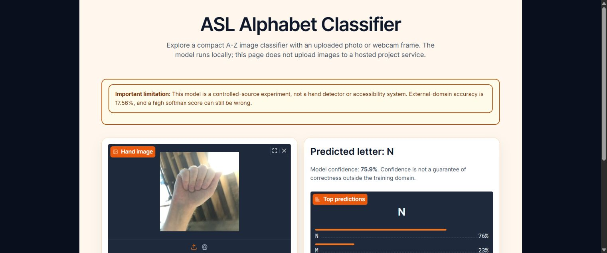

Same-corpus test
99.82%
15,572 of 15,600 images from the source dataset's untouched test partition.
Computer vision · reproducible research
A compact PyTorch classifier for isolated A-Z American Sign Language images, built with checksummed manifests, deterministic evaluation, and a candid external-domain test.
Still images only. This is not continuous signing, translation, or an accessibility system.
Measured results
Same-corpus test
99.82%
15,572 of 15,600 images from the source dataset's untouched test partition.
External capture source
17.56%
137 of 780 images from a separately captured, CC0 A-Z dataset.
Released model
164,546
Parameters in a self-describing 64 × 64 RGB CNN checkpoint.
Evidence over polish
The local demo sample is truly labeled A, yet the released model predicts N with 75.9% confidence. The screenshot makes the domain-shift limitation concrete.
Read the full evaluation report
Reproducible workflow
Run it locally
The repository includes installation steps, generated-data smoke tests, a released checkpoint, and the optional loopback-only demo.
Get started from the README